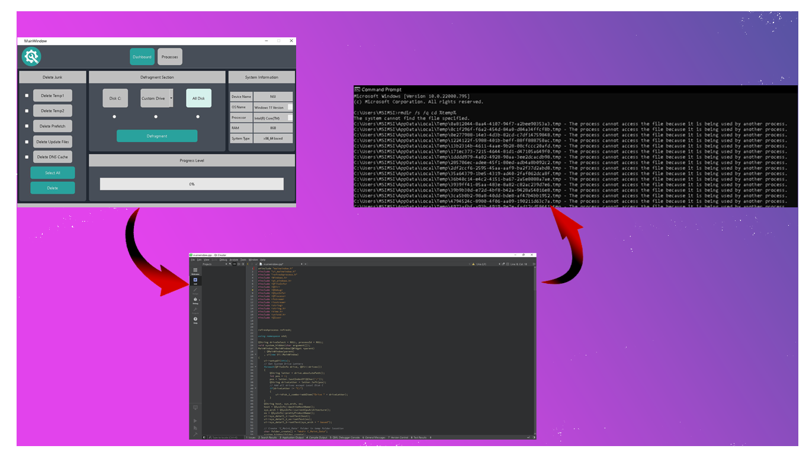

We probably have too many software in our system to overcome virsus and boost the
performance.
We also have our own Operating System’s application to block such types of data.
But still! We have it and
We are facing it!!
That’s why, the project optimation, We have created focusing entirely on you.
But, why this is different?!!
How can we differenciate this application from others?!!
Okay.. let’s dive into the details of our application, how this application born and
How you can trust it, confidently!!
C-Maint application created from the QT Creator.
Qt is cross-platform software for creating graphical user interfaces as well as
cross-platform applications that run on various software and hardware platforms
And this is the same software used to create skype, VLC-Media player, Google Earth and so
on.
For installation, extract the zip file and install the .exe file attached in the folder
Then there you go.. Run as administrator!
As of Now, Our Application only supports windows OS.
To directly communicate to your system and for different types of security reasons, we have
used your system CMD without even bothering you.

The C-Maint application calls for CMD, without even asking you.
And it silently runs the maintaing commands in it, which will solve different types of
problems.
Speaking about security of this application, it is basically designed to boost the
performance of your system.a
And, It’s an offline application.
Also, we have used Command prompt to execute the maintaince command for your system
which is the best process to boost the system without fearing about privacy.
We’ve used the best and effective process that is known till now, providing the secure
maintaince application in the history
of human being.